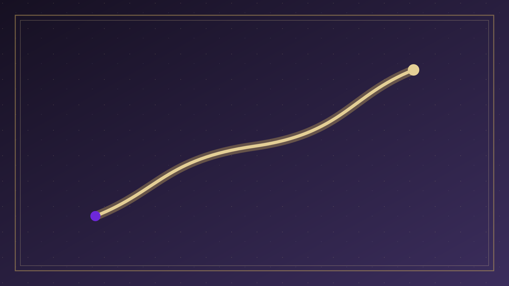

分題 07 / 08
實踐意義
實踐意義
積極傳福音
相信人的回應是真實的，激勵我們熱心傳揚福音，因為每個人的回應都重要。
謙卑的態度
承認救恩完全出於神的恩典，幫助我們保持謙卑，不誇口自己的選擇。
倚靠聖靈
相信聖靈的工作，在傳福音和個人成長中倚靠聖靈的引導和感動。
持續成長
明白神在我們心裡運行，激勵我們在成聖路上持續努力回應神的恩典。
確據與平安
相信神的主動工作給我們確據，知道救恩穩固在神的手中。
尊重與合一
認識到這是個奧秘，幫助我們以愛心對待持不同觀點的弟兄姊妹。